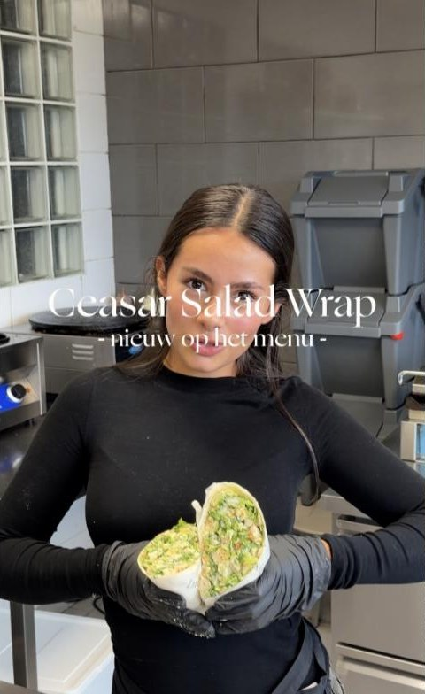
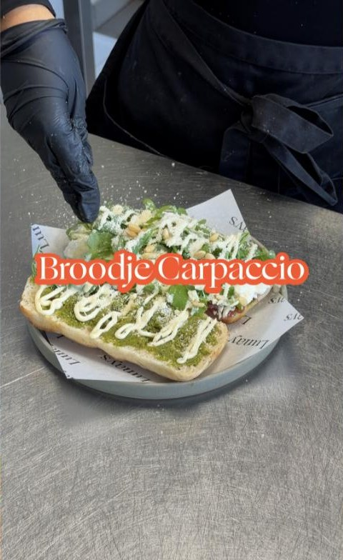
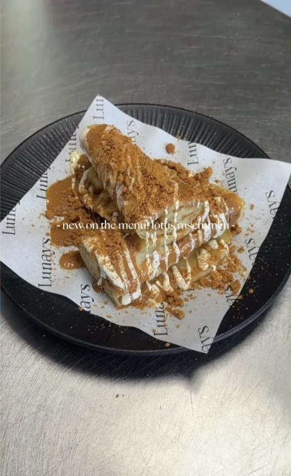
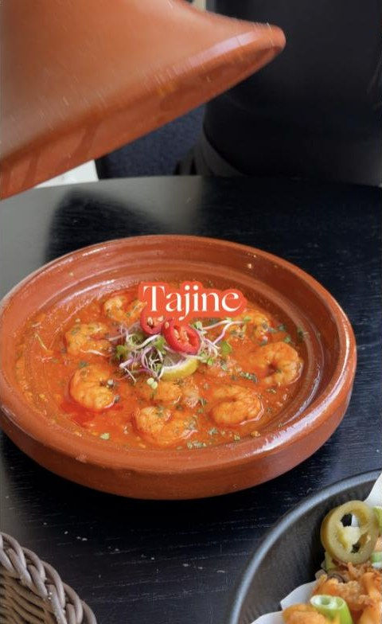

Nieuw
Caesar salad wrap
Nieuw op het menu.
Home / Menukaart
Traditioneel en contemporary – de kaart van Lunay's, doorzoekbaar en op je telefoon goed leesbaar.
Geen gerecht gevonden. Probeer een andere zoekterm.
Deze gerechten laat Lunay's recent op Instagram zien. Prijzen zijn daar niet vermeld.

Nieuw op het menu.

Broodje carpaccio met burrata.

Nieuw bij Lunay's.

Ook te bestellen bij Lunay's.
Let op: dit is een conceptvoorbeeld. De gerechten en prijzen komen van de openbaar gepubliceerde menukaart (via Visit Almere) en kunnen afwijken van de actuele kaart. Vraag in het restaurant of via Instagram naar de huidige kaart.